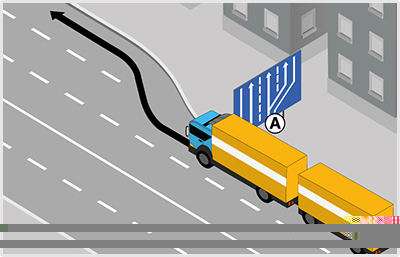
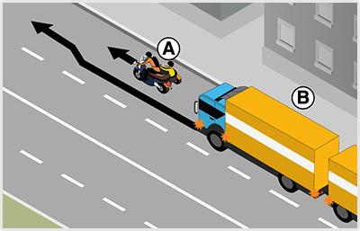
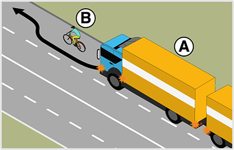
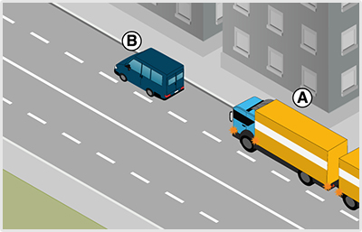
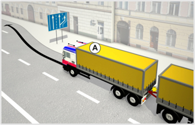
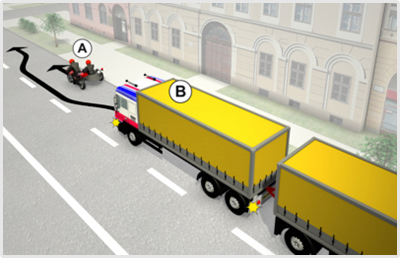
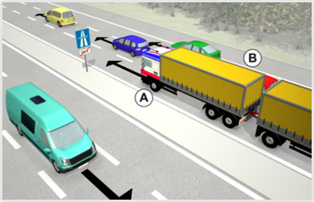
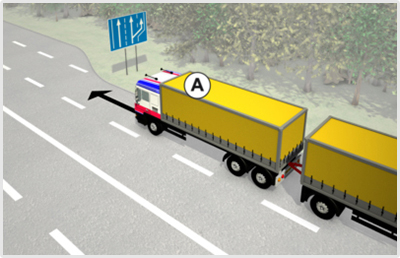
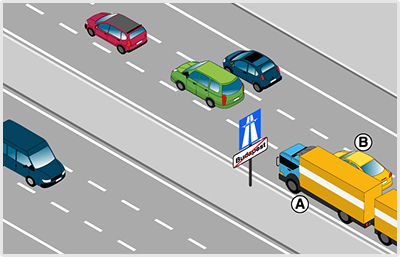

- 477. Hol kell közlekedni a párhuzamos közlekedésre alkalmas úttesten? #703514
- Általában a külső (jobb szélső) forgalmi sávban.
- Mindig a belső forgalmi sávban.
- Mindig a külső forgalmi sávban.
- 478. Figyelembe kell-e venni a párhuzamos közlekedés szempontjából az autóbusz-forgalmi sávot? #703516
- Nem.
- Igen.
- 479. Figyelembe kell-e venni a párhuzamos közlekedés szempontjából a kerékpársávot? #703518
- Nem.
- Igen.
- 480. Szabad-e a párhuzamos közlekedésre alkalmas úttesten a forgalmi sávokat a gyorsabb továbbhaladás érdekében kis távolságon belül ismételten változtatni? #703519
- Nem.
- Igen.
- 481. Szabad-e a párhuzamos közlekedésre alkalmas úttest felezővonalát átlépni? #703520
- A balra bekanyarodás és a megfordulás esetét kivéve nem.
- Igen, kellő körültekintéssel bárhol.
- 482. Szabad-e a párhuzamos közlekedésre alkalmas úttesten két járműnek ugyanabban a forgalmi sávban egymás mellett elhaladni? #703521
- Nem, kivéve az egy nyomon haladó jármű melletti elhaladást.
- Igen.
- 483. Szabad-e a párhuzamos közlekedésre alkalmas úttesten kijelölt gyalogos-átkelőhelyen másik jármű mellett elhaladni? #703522
- Nem.
- Igen.
- 484. Szabad-e forgalmi sávot változtatni a párhuzamos közlekedésre alkalmas úttesten, ha a forgalmi sávokban összefüggő járműoszlopok alakultak ki? #703523
- Csak akkor, ha a járművezető bekanyarodásra vagy megállásra készül fel.
- Igen, korlátozás nélkül.
- Összefüggő járműoszlopok esetén sosem szabad forgalmi sávot változtatni.
- 485. Mikor szabad közlekedni a kommunális szemét szállítására szolgáló járművel az autóbusz-forgalmi sávban? #703524
- 20 és 06 óra között.
- 06 és 22 óra között.
- Sosem.
- 486. Mely járművek közlekedhetnek autópályán? #703526
- Csak a gépjárműveknek, illetőleg gépjárműből és pótkocsiból álló járműszerelvényeknek egy meghatározott köre.
- Minden motorkerékpár és minden gépkocsi.
- Minden gépjármű.
- 487. Mely gépjárművek közlekedhetnek autópályán? #703527
- Csak olyanok, amelyek sík úton legalább 60 km/h sebességgel képesek haladni.
- Csak olyanok, amelyek 130 km/h sebességgel képesek haladni.
- Csak olyanok, amelyek tachográffal vannak felszerelve.
- 488. Kell-e alkalmazni a párhuzamos közlekedés szabályait autóúton? #703528
- Az azonos irányú forgalom számára legalább két forgalmi sávval rendelkező autóúton igen.
- Igen, minden autóúton.
- A két forgalmi sávval rendelkező autóúton igen.
- 489. Szabad-e autóútról út menti ingatlanra behajtani? #703529
- Nem.
- Igen, de csak segédmotoros kerékpárral.
- Csak motorkerékpárral.
- 490. Szabad-e autópályára út menti ingatlanról ráhajtani? #703530
- Nem.
- Igen, de csak segédmotoros kerékpárral.
- Csak motorkerékpárral.
- 491. Szabad-e autópályán járművel megfordulni? #703532
- Nem.
- Igen, lassú forgalom esetén.
- Csak akkor, ha az biztonságos.
- 492. Szabad-e autópályán járművel hátramenetet végezni? #703533
- Nem.
- Igen.
- Igen, de csak azzal a céllal, hogy visszajusson az első kijárathoz.
- 493. Szabad-e az autópálya úttestén megállnia (ide nem értve a forgalmi okból szükséges megállást)? #703534
- Nem.
- Igen, fáradság esetén.
- Csak akkor, ha a leállósáv foglalt.
- 494. Szabad-e az autóút úttestén megállnia (ide nem értve a forgalmi okból szükséges megállást)? #703535
- Nem.
- Csak akkor, ha a járművezető elfáradt.
- Csak a ki- és beszállás idejére.
- 495. Szabad-e folyamatosan haladni az autópálya vagy autóút leállósávján? #703536
- Nem, ide nem értve a jogszabályban külön meghatározott feladatot ellátó járműveket.
- Igen, de csak a lassan haladó járműszerelvénnyel.
- Igen, de csak az előzést segítő nagyméretű járművel.
- 496. Mely járművek kötelesek a kapaszkodósávon közlekedni? #714874
- Egyéb jelzés hiányában csak azok a járművek, amelyek lakott területen kívül 70 km/h, lakott területen pedig 40 km/h sebességnél lassabban haladnak.
- Egyéb jelzés hiányában csak azok a járművek, amelyek lakott területen kívül 90 km/h, lakott területen pedig 50 km/h sebességnél lassabban haladnak.
- Egyéb jelzés hiányában csak azok a járművek, amelyek lakott területen kívül 60 km/h, lakott területen pedig 30 km/h sebességnél lassabban haladnak.
- 497. Kell-e alkalmazni a párhuzamos közlekedés szabályait autópályán? #714875
- Igen.
- Nem.
- 498. Szabad-e az autóbusz-forgalmi sávban kétkerekű segédmotoros kerékpárral folyamatosan közlekedni? #714876
- Igen, az autóbusz- és trolibuszforgalom zavarása nélkül.
- Nem.
- Igen, feltétel nélkül.
- 499. Szabad-e járművel az autópályán vagy autóúton a leállósávon megállni? #714893
- Nem, ide nem értve a műszaki meghibásodás miatt álló járművet, továbbá a jogszabályban külön meghatározott feladatot ellátó járműveket.
- Igen, bármilyen esetben, ha a megállás időtartama nem haladja meg az 5 percet, és a járművezető ez idő alatt a járművénél marad.
- Igen, időtartami kötöttség nélkül ez bármely jármű számára megengedett.
- 500. Szabad-e járművel az autópályán vagy autóúton a leállósávon várakozni? #714894
- Nem, ide nem értve a műszaki meghibásodás miatt várakozó járművet, továbbá a jogszabályban külön meghatározott feladatot ellátó járműveket.
- Igen, bármilyen esetben, ha a várakozás időtartama nem haladja meg a 15 percet, és a járművezető ez idő alatt a járművénél marad.
- Igen, időtartami kötöttség nélkül ez bármely jármű számára megengedett.
- 501. Milyen körforgalmakban kell a párhuzamos közlekedés szabályait alkalmazni? #721769
- A párhuzamos közlekedésre alkalmas körforgalmakban.
- Csak a háromsávos körforgalmakban.
- Minden körforgalomban.
- 502. Szabad-e a lakott területen lévő háromsávos út középső forgalmi sávjában közlekedve elhaladni az Öntől balra lévő, legbelső forgalmi sávban lassabban haladó jármű mellett? #721777
- Igen, fokozott figyelemmel.
- Nem.
- 503. Szabad-e segédmotoros kerékpárral autópályán vagy autóúton közlekedni? #721781
- Nem.
- Igen.
- 504. Szabad-e a forgalmi sávokat - a gyorsabb előrehaladás érdekében - kis távolságon belül ismételten változtatni? #721787
- Nem.
- Igen, szabad.

- 505. Mikor köteles a képen látható ’A’ jelű járműszerelvénnyel lakott területen a kapaszkodósávon haladni? #721795
- Ha 40 km/h sebességnél lassabban halad.
- Ha 50 km/h sebességnél lassabban halad.
- Mindig, ha más nem közlekedik az úton.
- 506. Ön az ’A’ jelű tehergépkocsiból és pótkocsiból álló járműszerelvényt vezeti. Lakott területen szabályosan közlekedik a képen látható kapaszkodósávon? #721796
- Igen.
- Igen, de csak, ha 40 km/h sebességnél lassabban halad.
- Nem.
- 507. Haladhat-e 50 km/h sebességgel a képen látható ’A’ jelű járműszerelvénnyel lakott területen a kapaszkodósávon? #721797
- Igen.
- Nem, mivel csak 40 km/h sebességnél lassabban közlekedők haladhatnak a kapaszkodósávon.

- 508. Köteles-e a ’B’ jelű járműszerelvény vezetője az oldalkocsis motorkerékpáros előzése közben irányjelzőjét használni? #721814
- Igen, mert forgalmi sávot kell változtatnia.
- Nem.
- 509. A képen látható helyen a ’B’ jelű járműszerelvény vezetője megelőzheti-e ugyanabban a forgalmi sávban az ’A’ jelű oldalkocsis motorkerékpárost? #721815
- Nem, mert két járműnek ugyanabban a forgalmi sávban tilos egymás mellett elhaladni.
- Igen, mert minden motorkerékpár mellett szabad elhaladni ugyanabban a forgalmi sávban.
- 510. Ön a ’B’ jelű járműszerelvényt vezeti. Megelőzheti-e a képen látható módon az ’A’ jelű oldalkocsis motorkerékpárost? #721816
- Nem.
- Igen.

- 511. Ön az ’A’ jelű járműszerelvényt vezeti. Elhaladhat-e ugyanabban a forgalmi sávban a ’B’ jelű kerékpáros mellett? #721823
- Ha biztonságos oldaltávolságot tud tartani, akkor igen.
- Nem, mert párhuzamos közlekedésre alkalmas úton az előzés esetén köteles átmenni a belső forgalmi sávba.
- Nem, mert ezen a helyen ugyanabban a forgalmi sávban nem előzheti meg a kerékpárost.

- 512. Köteles-e az ’A’ jelű tehergépkocsiból és pótkocsiból álló járműszerelvény vezetője lakott területen a ’B’ jelű gépkocsi megelőzése után a jobb szélső forgalmi sávba visszatérni? #721831
- Igen.
- Nem.

- 513. Mikor köteles a képen látható ’A’ jelű járműszerelvénnyel lakott területen a kapaszkodósávon haladni? #722148
- Ha 40 km/h sebességnél lassabban halad.
- Ha 50 km/h sebességnél lassabban halad.
- Mindig, ha más nem közlekedik az úton.
- 514. Ön az ’A’ jelű tehergépkocsiból és pótkocsiból álló járműszerelvényt vezeti. Lakott területen szabályosan közlekedik a képen látható kapaszkodósávon? #722149
- Igen.
- Igen, de csak, ha 40 km/h sebességnél lassabban halad.
- Nem.
- 515. Haladhat-e 50 km/h sebességgel a képen látható ’A’ jelű járműszerelvénnyel lakott területen a kapaszkodósávon? #722150
- Igen.
- Nem, mivel csak 40 km/h sebességnél lassabban közlekedők haladhatnak a kapaszkodósávon.

- 516. Ön a kormánykerékkel jelzett járművet vezeti. Lakott területen szabályosan közlekedik a képen látható kapaszkodósávon? #722163
- Igen.
- Igen, de csak akkor, ha 40 km/h sebességnél lassabban halad.
- Nem.
- 517. Ön a kormánykerékkel jelzett járművet vezeti. Haladhat-e 50 km/h sebességgel lakott területen a kapaszkodósávon? #722164
- Igen.
- Nem, mivel csak 40 km/h sebességnél lassabban közlekedők haladhatnak a kapaszkodósávon.
- Nem, mert azon csak tehergépkocsik közlekedhetnek.

- 518. Köteles-e a ’B’ jelű járműszerelvény vezetője az oldalkocsis motorkerékpáros előzése közben irányjelzőjét használni? #722205
- Igen, mert forgalmi sávot kell változtatnia.
- Nem.
- 519. A képen látható helyen a ’B’ jelű járműszerelvény vezetője megelőzheti-e ugyanabban a forgalmi sávban az ’A’ jelű oldalkocsis motorkerékpárost? #722206
- Nem, mert a két járműnek ugyanabban a forgalmi sávban tilos egymás mellett elhaladni.
- Igen, mert minden motorkerékpár mellett szabad elhaladni ugyanabban a forgalmi sávban.
- 520. Ön a ’B’ jelű járműszerelvényt vezeti. Megelőzheti-e a képen látható módon az ’A’ jelű oldalkocsis motorkerékpárost? #722207
- Nem.
- Igen.

- 521. Ön a kormánykerékkel jelzett járművet vezetve köteles-e az oldalkocsis motorkerékpáros előzése közben irányjelzőjét használni? #722221
- Igen, mert forgalmi sávot kell változtatnia.
- Nem.

- 522. Szabályosan előz a képen látható helyen az ’A’ jelű járműszerelvény? #723357
- Nem.
- Igen, ha túl sűrű a forgalom az autópályán.
- Igen, de csak 22 és 06 óra között.

- 523. Az ’A’ jelű járműszerelvény lakott területen kívül 70 km/h sebességgel halad. Szabályos helyen közlekedik? #723366
- Igen.
- Nem, mert a kapaszkodósávon köteles haladni.
- 524. Az ’A’ jelű járműszerelvény lakott területen kívül a ködös idő miatt csak 60 km/h sebességgel halad. Szabályos helyen közlekedik? #723367
- Nem, mert ezzel a sebességgel a kapaszkodósávon kell haladnia.
- Igen, mert rossz látási viszonyok esetén ez a legbiztonságosabb forgalmi sáv.
- Igen, mindaddig, amíg az úton nem érkezik másik jármű.

- 525. Ön a kormánykerékkel jelzett járművet vezeti. Melyik jármű haladhat tovább elsőként az ábrán látható helyen? #723487
- Az ’A’ jelű személygépkocsi.
- Az Ön által vezetett jármű.
- Kölcsönös megegyezés alapján haladhatnak tovább.
- 526. Ön a kormánykerékkel jelzett járművet vezeti. Az ábrán látható helyen... #723488
- elsőbbséget kell adnia az ’A’ jelű személygépkocsi részére.
- elsőbbsége van az ’A’ jelű személygépkocsival szemben.
- meg kell egyezniük a továbbhaladási sorrendben.

- 527. Mit jelent a képen látható közúti jelzőtábla? #723673
- ’Kapaszkodósáv’.
- ’A besorolás rendje a következő útkereszteződésben’.
- ’Lassítósáv’.

- 528. Az ’A’ jelű járműszerelvény lakott területen kívüli autópályán 75 km/h sebességgel halad. Szabályos helyen közlekedik? #723679
- Igen.
- Nem, mert a kapaszkodósávon köteles haladni.
- Nem, mert a megengedettnél lassabban történő haladása miatt ezen a sávon veszélyhelyzetet teremt.
- 529. Az ’A’ jelű járműszerelvény lakott területen kívül a ködös idő miatt csak 60 km/h sebességgel halad. Szabályos helyen közlekedik? #723680
- Nem, mert ezzel a sebességgel csak a kapaszkodósávon szabad haladnia.
- Igen, mert rossz látási viszonyok esetén nem köteles senki a kapaszkodósávon haladni.
- Igen, mindaddig, amíg az úton nem érkezik másik jármű.

- 530. Mit jelent a képen látható közúti jelzőtábla? #723690
- ’Kapaszkodósáv’.
- ’A besorolás rendje a következő útkereszteződésben’.
- ’Lassítósáv’.

- 531. Mit jelent a képen látható közúti jelzőtábla. #723696
- ’Kapaszkodósáv’.
- ’A besorolás rendje a következő útkereszteződésben’.
- ’Lassítósáv’.

- 532. Mikor köteles az ’A’ jelű járműszerelvény lakott területen kívül a kapaszkodósávon közlekedni? #723701
- Ha 60 km/h sebességnél lassabban halad.
- Ha 80 km/h sebességgel halad.
- Ha 90 km/h sebességgel halad.
- 533. Az ’A’ jelű járműszerelvény lakott területen kívül 60 km/h sebességgel halad. Szabályos helyen közlekedik? #723702
- Igen.
- Nem, mert a kapaszkodósávon köteles haladni.
- Nem, mert a megengedettnél lassabban történő haladása miatt ezen a sávon veszélyhelyzetet teremt.

- 534. Szabályosan előz a képen látható helyen az ’A’ jelű járműszerelvény? #723975
- Nem.
- Igen, ha túl sűrű a forgalom az autópályán.
- Igen, de csak 22 és 06 óra között.

- 535. A képen látható helyen mindkét jármű csak irányváltoztatással tudja az útját folytatni. Melyik jármű haladhat tovább elsőként? #724040
- A jobbról érkező ’A’ jelű járműszerelvény.
- A balról érkező ’B’ jelű személygépkocsi.
- Kölcsönös megegyezés alapján haladhatnak tovább.
- 536. A képen látható helyen melyik jármű haladhat tovább elsőként? #724041
- Az ’A’ jelű járműszerelvény.
- A ’B’ jelű személygépkocsi.
- Kölcsönös megegyezés alapján haladhatnak tovább.
- 537. Ön az ’A’ jelű járműszerelvényt vezeti. A képen látható helyen... #724042
- elsőbbsége van a ’B’ jelű személygépkocsival szemben.
- elsőbbséget kell adnia a ’B’ jelű személygépkocsi részére.
- meg kell egyezniük a továbbhaladási sorrendben.

- 538. A képen látható helyen melyik jármű haladhat tovább elsőként? #724059
- Az ’A’ jelű személygépkocsi.
- A ’B’ jelű járműszerelvény.
- Kölcsönös megegyezés alapján haladhatnak tovább.
- 539. Ön a ’B’ jelű járműszerelvényt vezeti. A képen látható helyen... #724060
- elsőbbséget kell adnia az ’A’ jelű személygépkocsi részére.
- elsőbbsége van az ’A’ jelű személygépkocsival szemben
- meg kell egyezniük a továbbhaladási sorrendben.